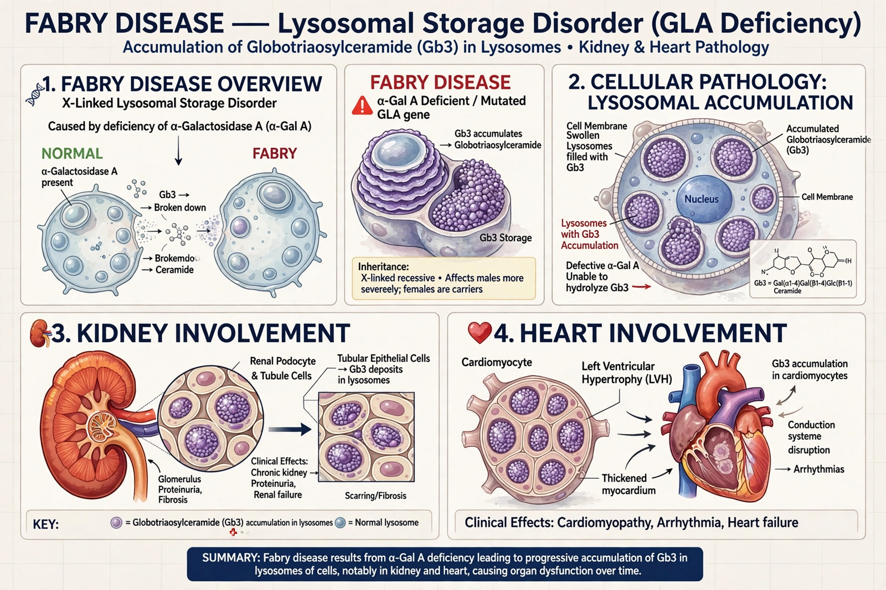

Fabry disease is an X-linked lysosomal storage disorder caused by deficiency of alpha-galactosidase A (gene GLA), leading to accumulation of globotriaosylceramide (Gb3) in blood vessels, kidneys, heart and nerves.

Burning pain in hands and feet (acroparaesthesia), angiokeratomas, reduced sweating, corneal whorls, progressive kidney failure, hypertrophic cardiomyopathy and stroke. Females can be significantly affected due to X-inactivation.
Enzyme replacement therapy (agalsidase alfa/beta, pegunigalsidase) and the oral chaperone migalastat for amenable mutations. See X chromosome.